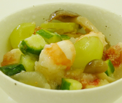

エビとブドウの梨酢和え
- 調理時間：20 分
- （一人当たり）
- カロリー：76kcal
- たんぱく質：4.4g
- 脂質：0.2g
- 炭水化物：14.5g
- 塩分：0.5g


＜4人分＞
- エビ
- 4尾
- 巨峰（又はマスカット）
- 1/4房
- シメジ
- 1/3袋
- イチジク
- 1個
- キュウリ
- 1本
- ・酢
- 1/2カップ
- ・砂糖
- 大さじ1～2
- ・塩
- 少々
- ・水溶き片栗粉
- 水 小さじ2
片栗粉 小さじ2 - ・梨
- 1個
《梨酢》


- 鍋に水、酒少々（分量外）を煮立て、塩少々入れた中で、エビを３分ほど茹でる。
エビの赤色を残すため、冷めてから、殻をむき５等分する。 - しめじは石づきを取り、ほぐした後、熱湯で茹でて水気をきる。
- キュウリは塩を振り板ずりしてサッと洗い、水気を切り、縦４本に切り、エビと同じ大きさに切る。
- 巨峰は皮をむき、２～４つ割りにして、塩水に浸け水気を切る。
イチジクも大きさを揃えるように切る。 - 《梨酢を作る》
1. 鍋に、酢、砂糖、塩を入れて火にかけ、沸騰したら水溶き片栗粉を加えてよく混ぜとろみを付ける。
2. 冷めたら、すりおろした梨を加えて混ぜ、冷やす。 - 下準備した材料を梨酢で和える。
エビとブドウの梨酢和え
空気が澄みわたり気持ちのよい季節になりました。この時期は、空気が乾燥し、肺や呼吸器系に影響を与えるため、口やのどが渇き、咳が出やすくなります。中医学では「肺」を潤す食べもの、色は「白」の食材を積極的に摂ることが勧められています。
白食材の梨は、皮にコルク層が発達し褐色になる赤なしと、それがない緑色の青なしがあります。赤なしは「幸水」、「長十郎」、「新高」など。青なしは「二十世紀」、「菊水」、「八雲」などがあります。カリウムが多めなので利尿作用による新陳代謝の促進や毒素の排泄を促します。